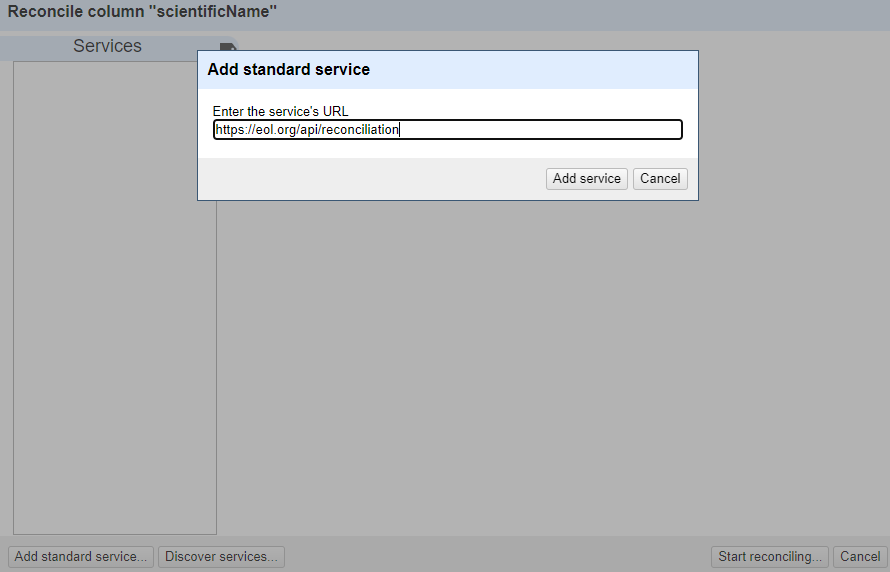
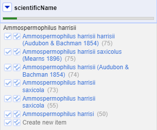

Content from Introduction
Last updated on 2023-05-09 | Edit this page
Overview
Questions
- How is OpenRefine useful?
Objectives
- Describe OpenRefine’s uses and applications.
- Differentiate data cleaning from data organization.
- Experiment with OpenRefine’s user interface.
- Locate helpful resources to learn more about OpenRefine.
Lesson
Motivations for the OpenRefine Lesson
Data is often very messy, and this tool saves a lot of time on cleaning headaches.
Data cleaning steps often need repeating with multiple files. It is important to know what you did to your data. This makes it easy for you to repeat these steps again with similarly structured data. OpenRefine is perfect for speeding up repetitive tasks by replaying previous actions on multiple datasets.
Additionally, journals, granting agencies, and other institutions are requiring documentation of the steps you took when working with your data. With OpenRefine, you can capture all actions applied to your raw data and share them with your publication as supplemental material.
Any operation that changes the data in OpenRefine can be easily reversed or undone.
-
Some concepts such as clustering algorithms are quite complex, but OpenRefine makes it easy to introduce them, use them, and show their power.
Note: You must export your modified dataset to a new file: OpenRefine does not save over the original source file. All changes are stored in the OpenRefine project.
Before we get started
The following setup is necessary before we can get started (see the instructions here.)
What is OpenRefine?
- OpenRefine is a Java program that runs on your machine (not in the cloud): it is a desktop application that uses your web browser as a graphical interface. No internet connection is needed, and none of the data or commands you enter in OpenRefine are sent to a remote server.
- OpenRefine does not modify your original dataset. All actions are easily reversed in OpenRefine and you can capture all the actions applied to your data and share this documentation with your publication as supplemental material.
- OpenRefine saves as you go. You can return to the project at any time to pick up where you left off or export your data to a new file.
- OpenRefine can be used to standardise and clean data across your file.
It can also help you
- Get an overview of a data set
- Resolve inconsistencies in a data set
- Help you split data up into more granular parts
- Match local data up to other data sets
- Enhance a data set with data from other sources
- Save a set of data cleaning steps to replay on multiple files
OpenRefine is a powerful, free, and open source tool with a large growing community of practice. More help can be found at https://openrefine.org.
Features
- Open source (source on GitHub).
- A large growing community, from novice to expert, ready to help.
More Information on OpenRefine
You can find out a lot more about OpenRefine at the official user manual docs.openrefine.org. There is a user forum that can answer a lot of beginner questions and problems. Recipes, scripts, projects, and extensions are available to add functionality to OpenRefine. These can be copied into your OpenRefine instance to run on your dataset.
Content from Importing Data to OpenRefine
Last updated on 2023-05-09 | Edit this page
Overview
Questions
- How can we import our data into OpenRefine?
Objectives
- Create a new OpenRefine project from a CSV file
Importing data
What kinds of data files can I import?
There are several options for getting your data set into OpenRefine. You can import files in a variety of formats including:
- Comma-separated values (CSV) or tab-separated values (TSV)
- Text files
- Fixed-width columns
- JSON
- XML
- OpenDocument spreadsheet (ODS)
- Excel spreadsheet (XLS or XLSX)
- RDF data (JSON-LD, N3, N-Triples, Turtle, RDF/XML)
- Wikitext
See the Create a project by importing data page in the OpenRefine manual for more information.
Create your first OpenRefine project (using provided data)
Start OpenRefine, which will open in your browser (at the address http://127.0.0.0:3333). Once OpenRefine is launched in your browser, the left margin has options to:
Create ProjectOpen ProjectImport ProjectLanguage Settings
Click
Create Projectfrom the left margin and select thenThis Computer(because you’re uploading data from your computer).Click
Choose Filesand browse to where you stored the filePortal_rodents_19772002_simplified.csv. Select the file and clickOpen, or just double-click on the filename.

Click
Next>>under the browse button to upload the data into OpenRefine.On the next screen, OpenRefine will present you with a preview of your data. You can check here for obvious errors, if, for example, your file was tab-delimited rather than comma-delimited, the preview would look strange (and you could correct it by choosing the correct separator and clicking the
Update Previewbutton on the right. If you selected the wrong file, click<<Start Overat the top left.In the middle of the page, will be a set of options (
Character encoding, etc.). Make sure the tick box next toTrim leading & trailing whitespace from stringsis not ticked. (We’re going to need the leading whitespace in one of our examples.)
- If all looks well, click
Create Project>>in the top right. You will be presented with a view onto your data. This is OpenRefine!
The columns are all imported as text, even the columns with numbers. We will see how to format the numeric columns in the next episode.
OpenRefine does not modify your original dataset
Once your data is imported into a project - OpenRefine leaves your raw data intact and works on a copy which it creates inside the newly created project. All the data transformation and cleaning steps you apply will be performed on this copy and you can easily undo any changes too.
Content from Exploring Data with OpenRefine
Last updated on 2023-09-22 | Edit this page
Overview
Questions
- How can we summarise our data?
- How can we find errors in our data?
- How can we edit data to fix errors?
- How can we convert column data from one data type to another?
Objectives
- Learn about different types of facets and how they can be used to summarise data of different data types
Exploring data with facets
Facets are one of the most useful features of OpenRefine. Data faceting is a process of exploring data by applying multiple filters to investigate its composition. It also allows you to identify a subset of data that you wish to change in bulk.
A facet groups all the like values that appear in a
column, and allows you to filter the data by those values. It also
allows you to edit values across many records at the same time.
Exploring text columns
One type of facet is called a ‘Text facet’. This groups all the identical text values in a column and lists each value with the number of records it appears in. The facet information always appears in the left hand panel in the OpenRefine interface.
Here we will use faceting to look for potential errors in data entry
in the scientificName column.
Scroll over to the
scientificNamecolumn.Click the down arrow and choose
Facet>Text facet.
- In the left panel, you’ll now see a box containing every unique
value in the
scientificNamecolumn along with a number representing how many times that value occurs in the column.

Try sorting this facet by name and by count. Do you notice any problems with the data? What are they?
Hover the mouse over one of the names in the
facetlist. You should see that you have aneditfunction available.You could use this to fix an error immediately, and OpenRefine will ask whether you want to make the same correction to every value it finds like that one. But OpenRefine offers even better ways to find and fix these errors, which we’ll use instead. We’ll learn about these when we talk about clustering.
Facets and large datasets
Facets are intended to group together common values and OpenRefine limits the number of values allowed in a single facet to ensure the software does not perform slowly or run out of memory. If you create a facet where there are many unique values (for example, a facet on a ‘book title’ column in a data set that has one row per book) the facet created will be very large and may either slow down the application, or OpenRefine will not create the facet.
- For the column
yrdoFacet>Text facet. A box will appear in the left panel showing that there are 16 unique entries in this column. - After creating a facet, click
Sort by countin the facet box. The year with the most observations is 1978. The least is 1993. - By default, the column
yris formatted as Text.
Exploring numeric columns
When a table is imported into OpenRefine, all columns are treated as
having text values. We can transform columns to other data types
(e.g. number or date) using the Edit cells >
Common transforms feature. Here we will experiment changing
columns to numbers and see what additional capabilities that grants
us.
Numeric facet
Sometimes there are non-number values or blanks in a column which may
represent errors in data entry and we want to find them. We can do that
with a Numeric facet.
Create a numeric facet for the column yr.
The facet will be empty because OpenRefine sees all the values as
text.
To transform cells in the yr column to numbers, click
the down arrow for that column, then Edit cells >
Common transforms… > To number. You will
notice the yr values change from left-justified to
right-justified, and black to green color.
Exercise
The dataset included other numeric columns that we will explore in this exercise:
-
period- Unique number assigned to each survey period -
plot- Plot number animal was caught on, from 1 to 24 -
recordID- Unique record ID number to facilitate quick reference to particular entry
Transform the columns period, plot, and
recordID from text to numbers.
- How does changing the format change the faceting display for the
yrcolumn? - Can all columns be transformed to numbers?
Displaying a Numeric facet of yr shows a
histogram of the number of entries per year. Notice that the data is
shown as a number, not a date. If you instead transform the column to a
date, the program will assume all entries are on January 1st of the
year.
Only observations that include only numerals (0-9) can be transformed to numbers. If you apply a number transformation to a column that doesn’t meet this criteria, and then click the Undo / Redo tab, you will see a step that starts with Text transform on 0 cells. This means that the data in that column was not transformed.
The next exercise will explore what happens when a numeric column contains values that are not numbers.
Exercise
- For a column you transformed to numbers, edit one or two cells,
replacing the numbers with text (such as
abc) or blank (no number or text). - Use the pulldown menu to apply a numeric facet to the column you edited. The facet will appear in the left panel.
- Notice that there are several checkboxes in this facet:
Numeric,Non-numeric,Blank, andError. Below these are counts of the number of cells in each category. You should see checks forNon-numericandBlankif you changed some values. - Experiment with checking or unchecking these boxes to select subsets of your data.
When done examining the numeric data, remove this facet by clicking
the x in the upper left corner of its panel. Note that this
does not undo the edits you made to the cells in this column.
Examine a pair of numeric columns using scatterplots
Now that we have multiple columns representing numbers, we can see
how they relate to one another using the scatterplot facet. Select a
numeric column, for example recordID, and use the pulldown
menu to > Facet > Scatterplot facet. A
new window called Scatterplot Matrix will appear. There are
squares for each pair of numeric columns organized in an upper right
triangle. Each square has little dots for the cell values from each
row.
Click the image of the scatterplot between recordID and
yr to select this one for the facet.
More Details on Faceting
Full documentation on faceting can be found at Exploring facets: Faceting
Content from Transforming Data
Last updated on 2023-09-23 | Edit this page
Overview
Questions
- How can we transform our data to correct errors?
Objectives
- Learn about clustering and how it is applied to group and edit typos
- Split values from one column into multiple columns
- Manipulate data using previous cleaning steps with undo/redo
- Remove leading and trailing white spaces from cells
Data splitting
It is easy to split data from one column into multiple columns if the parts are separated by a common separator (say a comma, or a space).
- Let us suppose we want to split the
scientificNamecolumn into separate columns, one for genus and one for species. - Click the down arrow next to the
scientificNamecolumn. ChooseEdit Column>Split into several columns... - In the pop-up, in the
Separatorbox, replace the comma with a space (the box will look empty when you’re done). - Important! Uncheck the box that says
Remove this column. - Click
OK. You should get some new columns calledscientificName 1,scientificName 2,scientificName 3, andscientificName 4. - Notice that in some cases these newly created columns are empty (you can check by text faceting the column). Why? What do you think we can do to fix it?
The entries that have data in scientificName 3 and
scientificName 4 but not the first two
scientificName columns had an extra space at the beginning
of the entry. Leading and trailing white spaces are very difficult to
notice when cleaning data manually. This is another advantage of using
OpenRefine to clean your data - this process can be automated.
In newer versions of OpenRefine (from version 3.4.1) there is now an option to clean leading and trailing white spaces from all data when importing the data initially and creating the project.
Both new columns will appear with green text, indicating they are
numeric. The option for Guess cell type allowed OpenRefine
to guess that these values were numeric.
Undoing / Redoing actions
It is common while exploring and cleaning a dataset to make a mistake
or decide to change the order of the process you wish to conduct.
OpenRefine provides Undo and Redo operations
to make it easy to roll back your changes.
- Click
Undo / Redoin the left side of the screen. All the changes you have made will appear in the left-hand panel. The current stage in the data processing is highlighted in blue (i.e. step 4. in the screenshot below). As you click on the different stages in the process, the step identified in blue will change and, far more importantly, the data will revert to that stage in the processing.
We want to undo the splitting of the column
scientificName. Select the stage just before the split occurred and the newscientificNamecolumns will disappear.Notice that you can still click on the last stage and make the columns reappear, and toggle back and forth between these states. You can also select the state more than one steps back and revert to that state.
Let’s leave the dataset in the state before
scientificNameswas split.
Trimming leading and trailing whitespace
Words with spaces at the beginning or end are particularly hard for
humans to identify from strings without these spaces (as we have seen
with the scientificName column). However, blank spaces can
make a big difference to computers, so we usually want to remove
them.
- In the header for the column
scientificName, chooseEdit cells>Common transforms>Trim leading and trailing whitespace. - Notice that the
Splitstep has now disappeared from theUndo / Redopane on the left and is replaced with aText transform on 2 cells
On the scientificName column, click the down arrow next
to the scientificName column and choose
Edit Column > Split into several columns...
from the drop down menu. Use a blank character as a separator, as
before. You should now get only two columns
scientificName 1 and scientificName 2.
Renaming columns
We now have the genus and species parts neatly separated into 2
columns - scientificName 1 and
scientificName 2. We want to rename these as
genus and species, respectively.
- Let’s first rename the
scientificName 1column. On the column, click the down arrow and thenEdit column>Rename this column. - Type “genus” into the box that appears.
- On the
scientificName 2column, click the down arrow and thenEdit column>Rename this column. - Type “species” into the box that appears.
- A pop-up will appear that says
Another column already named species. This is because there is another column with the same name where we’ve recorded the species abbreviation. - You can use another name for the
scientificName 2or change the name of thespeciescolumn and then rename thescientificName 2column.
Edit the name of the species column to
species_abbreviation. Then, rename
scientificName 2 to species.
Combining columns to create new ones
The date for each row in the data file is split in three columns:
dy (day), mo (month), and yr
(year). We can create a new column with the date in the format we want
by combining these columns.
Click on the menu for the
yrcolumn and selectEdit column>Join columns....In the window that opens up, check the boxes next to the columns
yr,mo, anddy.Enter
-as a separator.Select the option
Write result in new column namedand writedateas the name for the new column.-
Click
OK
You can change the order of the columns by dragging the columns in the left side of the window.
Once the new column is created, convert it to date using
Edit cells > Common transforms >
To date. Now you can explore the data using a timeline
facet. Create the new facet by clicking on the menu for the column
date and select Facet >
Timeline facet.
Data clustering
Clustering allows you to find groups of entries that are not
identical but are sufficiently similar that they may be alternative
representations of the same thing (term or data value). For example, the
two strings New York and new york are very
likely to refer to the same concept and just have a capitalization
differences. Likewise, Björk and Bjork
probably refer to the same person. These kinds of variations occur a lot
in scientific data. Clustering gives us a tool to resolve them.
OpenRefine provides different clustering algorithms. The best way to understand how they work is to experiment with them.
The dataset has several near-identical entries in
scientificName. For example, there are two misspellings of
Ammospermophilus harrisii:
- Ammospermophilis harrisi and
- Ammospermophilus harrisi
If you removed it, reinstate the
scientificNametext facet (you can also remove all the other facets to gain some space). In thescientificNametext facet box - click theClusterbutton.In the resulting pop-up window, you can change the
Methodand theKeying Function. Try different combinations to see what different mergers of values are suggested.If you select the
key collisionmethod and themetaphone3keying function. It should identify one cluster:

Note that the
New Cell Valuecolumn displays the new name that will replace the value in all the cells in the group. You can change this if you wish to choose a different value than the suggested one.Tick the
Merge?checkbox beside each group, then clickMerge selected & Closeto apply the corrections to the dataset and close the window.The text facet of
scientificNamewill update to show the new summary of the column. It will now have ten options:
Clustering Documentation
Full documentation on clustering can be found at the OpenRefine Clustering Methods In-depth page of the OpenRefine manual.
Content from Filtering and Sorting with OpenRefine
Last updated on 2023-05-09 | Edit this page
Overview
Questions
- How can we select only a subset of our data to work with?
- How can we sort our data?
Objectives
- Employ text filter or include/exclude to filter to a subset of rows.
- Sort tables by a column.
- Sort tables by multiple columns.
Filtering
Sometimes you want to view and work only with a subset of data or apply an operation only to a subset. You can do this by applying various filters to your data.
Including/excluding data entries on facets
One way to filter down our data is to use the include or
exclude buttons on the entries in a text facet. If you
still have your text facet for scientificName, you can use
it. If you’ve closed that facet, recreate it by selecting
Facet > Text facet on the
scientificName column.
- In the text facet, hover over one of the names, e.g. Baiomys
taylori. Notice that when you hover over it, there are buttons to
the right for
editandinclude. - Whilst hovering over Baiomys taylori, move to the right and
click the
includeoption. This will include this species, as signified by the name of the species changing from blue to orange, and new options ofeditandexcludewill be presented. Note that in the top of the page, “33 matching rows” is now displayed instead of “790 rows”. - You can include other species in your current filter - e.g. click on Chaetodipus baileyi in the same way to include it in the filter.
- Alternatively, you can click the name of the species to include it
in the filter instead of clicking the
include/excludebuttons. This will include the selected species and exclude all others options in a single step, which can be useful. - Click
includeandexcludeon the other species and notice how the entries appear and disappear from the data table to the right.
Click on Reset at the top-right of the facet before
continuing to the next step.
Text filters
One way to filter data is to create a text filter on a column. Close
all facets you may have created previously and reinstate the text facet
on the scientificName column.
Click the down arrow next to
scientificName>Text filter. AscientificNamefilter will appear on the left margin below the text facet.Type in
baiinto the text box in the filter and press return. At the top of the page it will report that, out of the 790 rows in the raw data, there are 35 rows in which the text has been found within thescientificNamecolumn (and these rows will be selected for the subsequent steps).
- Near the top of the screen, change
Show:to 50. This way, you will see all the matching rows in a single page.
- Do
Facet>Text faceton thescientificNamecolumn after filtering. This will show that two names match your filter criteria. They are Baiomys taylori and Chaetodipus baileyi. - To restrict to only one of these two species, you could:
- Check the
case sensitivebox within thescientificNamefacet. Once you do this, you will see that using the upper-caseBaiwill only > > return Baiomys taylori, while using lower-casebaiwill only return Chaetodipus baileyi. - You could include more letters in your filter (i.e. typing
baiowill exclusively return Baiomys taylori, whilebailwill only return Chaetodipus baileyi).
Important: Make sure both species (Baiomys taylori and Chaetodipus baileyi) are included in your filtered dataset before continuing with the rest of the exercises.
Sort
Sorting data is a useful practice for detecting outliers in data - potential errors and blanks will sort to the top or the bottom of your data.
You can sort the data in a column by using the drop-down menu
available in that column. There you can sort by text,
numbers, dates or booleans
(TRUE or FALSE values). You can also specify
what order to put Blanks and Errors in the
sorted results.
If this is your first time sorting this table, then the drop-down
menu for the selected column shows Sort.... Select what you
would like to sort by (such as numbers). Additional options
will then appear for you to fine-tune your sorting.
In the mo column, select Sort... >
numbers and select smallest first. The months
are listed from 1 (for January) through 12 (December).
If you try to re-sort a column that you have already used, the
drop-down menu changes slightly, to > Sort without the
..., to remind you that you have already used this column.
It will give you additional options:
Sort>Sort...- This option enables you to modify your original sort.Sort>Reverse- This option allows you to reverse the order of the sort.Sort>Remove sort- This option allows you to undo your sort.
In the plot column, select Sort... >
numbers and select smallest first. The years
represented include 1990 and 1995.
Sorting by multiple columns
You can sort by multiple columns by performing sort on additional
columns. The sort will depend on the order in which you select columns
to sort. To restart the sorting process with a particular column, check
the sort by this column alone box in the Sort
pop-up menu.
- For the
mocolumn, click onSort...and thennumbers. This will group all entries made in, for example, January, together, regardless of the year that entry was collected. - For the
yrcolumn, click onSort>Sort...>numbersand selectsort by this column alone. This will undo the sorting by month step. Once you’ve sorted byyryou can then apply another sorting step to sort by month within year. To do this for themocolumn, click onSort>numbersbut do not selectsort by this column alone. To ensure that all entries are shown chronologically, you will need to also sort by days within each month. Click on thedycolumn thenSort>numbers. Your data should now be in chronological order.
If you go back to one of the already sorted columns and select >
Sort > Remove sort, that column is removed
from your multiple sort. If it is the only column sorted, then data
reverts to its original order.
Content from Reconciliation of Values
Last updated on 2023-05-09 | Edit this page
Overview
Questions
- How can we reconcile scientific names against a taxonomy?
Objectives
- Add external reconciliation services.
- Cleanup scientific names by matching them to a taxonomy.
- Identify and correct misspelled or incorrect names for a taxon.
Reconciliation of names
Reconciliation services allow you to lookup terms from your data in OpenRefine against external services, and use values from the external services in your data. The OpenRefine manual provides more information about the reconciliation feature.
Reconciliation services can be more sophisticated and often quicker
than using the method described above to retrieve data from a URL.
However, to use the Reconciliation function in OpenRefine
requires the external resource to support the necessary service for
OpenRefine to work with, which means unless the service you wish to use
supports such a service you cannot use the Reconciliation
approach.
There are a few services where you can find an OpenRefine Reconciliation option available. For example Wikidata has a reconciliation service at https://wikidata.reconci.link/.
Reconcile scientific names with the Encyclopedia of Life (EOL)
We can use the Encyclopedia of Life Reconciliation service to find the taxonomic matches to the names in the dataset.
In the
scientificNamecolumn use the dropdown menu to choose ‘Reconcile->Start Reconciling’If this is the first time you’ve used this particular reconciliation service, you’ll need to add the details of the service now
- Click ‘Add Standard Service…’ and in the dialogue that appears
enter:
-
https://eol.org/api/reconciliation
-
You should now see a heading in the list on the left hand side of the Reconciliation dialogue called “Encyclopedia of Life”
Click on this to choose to use this reconciliation service
In the middle box in the reconciliation dialogue you may get asked what type of ‘entity’ you want to reconcile to - that is, what type of thing are you looking for. The list will vary depending on what reconciliation service you are using.
- In this case, the only option is “Taxon”
In the box on the righthand side of the reconciliation dialogue you can choose if other columns are used to help the reconciliation service make a match - however it is sometimes hard to tell what use (if any) the reconciliation service makes of these additional columns
At the bottom of the reconciliation dialogue there is the option to “Auto-match candidates with high confidence”. This can be a time saver, but in this case you are going to uncheck it, so you can see the results before a match is made
Now click ‘Start Reconciling’

Reconciliation is an operation that can take a little time if you have many values to look up.
Once the reconciliation has completed two Facets should be created automatically:
- scientificName: Judgement
- scientificName: best candidate’s score
These are two of several specific reconciliation facets and actions that you can get from the ‘Reconcile’ menu (from the column drop down menu).
Close the ‘scientificName: best candidate’s score’ facet, but leave the ‘scientificName: Judgement’ facet open.
If you look at the scientificName column, you should see some cells have found one or more matches - the potential matches are shown in a list in each cell. Next to each potential match there is a ‘tick’ and a ‘double tick’. To accept a reconciliation match you can use the ‘tick’ options in cells. The ‘tick’ accepts the match for the single cell, the ‘double tick’ accepts the match for all identical cells.
- Create a text facet on the scientificName column
- Choose Ammospermophilus harrisii
- In the scientificName column you should be able to see the various potential matches. Clicking on a match will take you to the EOL page for that entity 
- Click a ‘double tick’ in one of the scientificName column cells for the option “Ammospermophilus harrisii (Audubon & Bachman 1854)”
- This will accept this as a match for all cells with this value - you should see the other options disappear
There are two things that reconciliation can do for you. Firstly it gets a standard form of the name or label for the entity. Secondly it gets an ID for the entity - in this case a page and numeric id for the scientific name in EOL. This is hidden in the default view, but can be extracted:
- In the scientificName column use the dropdown menu to choose
Reconcile>Add entity identifiers column... - Give the column the name “EOL-ID”
- This will create a new column that contains the EOL ID for the matched entity
Reconcile country, state, and counties against Wikidata
The country field contains several alternative ways to indicate the United States of America, including:
USUNITED STATESUnited States of America
Exercise
If Wikidata does not appear in the list of reconciliation services,
add the standard service using the URL:
https://wikidata.reconci.link/en/api
- Reconcile the columns
county,state, andcountryusing Wikidata.- If a type does not show in the list, search using the
Reconcile against typebox:-
country:country (Q6256) -
state:U.S. state (Q35657) -
county:county of the United States (Q47168)
-
- If a type does not show in the list, search using the
- Mouseover the options listed to see a preview of the entity
suggested
- For the cells with multiple options, choose one of the suggested values and click the double checkmark button to apply to all cells with the same value
- Click the menu of the
countrycolumn and selectEdit column>Add column based on this column... - Enter “reconciled_country” in the field for
New column name - In the
Expressionbox, enter the following GREL:cell.recon.best.name - Click
OK
This will create a new column with the reconciled names for the countries. Create a text facet to see that there are a single name for each country.
- In the cases where OpenRefine did not select a match automatically, are the options relevant?
- Why do some cells in the
countycolumn have many options?
- The options may be for the same place, but with different wording,
like
Hernando CountyforHernando. - Several county names exist in multiple states. You can mouseover each option and find the correct one that matches the state.
Content from Looking Up Data
Last updated on 2023-05-09 | Edit this page
Overview
Questions
- How do I fetch data from an Application Programming Interface (API) to be used in OpenRefine?
- How do I reconcile my data by comparing it to authoritative datasets
Objectives
- Use URLs to fetch data from the web based on columns in an OpenRefine project
- Add columns to parse JSON data returned by web services
Looking up data from a URL
OpenRefine can retrieve data from URLs. This can be used in various ways, including looking up additional information from a remote service, based on information in your OpenRefine data. As an example, you can look up the scientific names in a dataset against the taxonomy of the Global Biodiversity Information Facility (GBIF), and retrieve additional information such as higher taxonomy and identifiers.
Typically this is a two step process, firstly a step to retrieve data from a remote service, and secondly to extract the relevant information from the data you have retrieved.
To retrieve data from an external source, use the drop down menu at
any column heading and select Edit column >
Add column by fetching URLs....
This will prompt you for a GREL expression to create a URL. This URL will use existing values in your data to build a query. When the query runs OpenRefine will request each URL (for each line) and retrieve whatever data is returned (this may often be structured data, but could be HTML). The data retrieved will be stored in a cell in the new column that has been added to the project. You can then use OpenRefine transformations to extract relevant information from the data that has been retrieved. Two specific OpenRefine functions used for this are:
parseHtml()parseJson()
The parseHtml() function can also be used to extract
data from XML.
Retrieving higher taxonomy from GBIF
In this case we are going to use the GBIF API. Note that
API providers may impose rate limits or have other requirements for
using their data, so it’s important to check the site’s documentation.
To reduce the impact on the service, use a value of 500 in
the Throttle Delay setting to specify the number of
milliseconds between requests.
The syntax for requesting species information from GBIF is
http://api.gbif.org/v1/species/match?name={name} where
{name} is replaced with the scientific name in the dataset.
Using the dropdown menu of
scientificName, selectEdit column>Add column by fetching URLs...In the
New column namefield, enter “gbif_JSON”In the field for
Throttle delayenter 500-
In the expression box type the GREL
"http://api.gbif.org/v1/species/match?name="+escape(value,'url')At this point, your screen should be similar to this:
Click ‘OK’
You should see a message at the top on the OpenRefine screen indicating it is fetching some data, with progress showing the percentage of the proportion of rows of data successfully being fetched. Wait for this to complete.
At this point you should have a new column containing a long text string in a format called ‘JSON’ (this stands for JavaScript Object Notation, although very rarely spelt out in full). The results should look like this figure:
OpenRefine has a function for extracting data from JSON (sometimes
referred to as ‘parsing’ the JSON). The parseJson()
function is explained in more detail at the Format-based
functions page.
In the new column you’ve just added use the dropdown menu to access
Edit column>Add column based on this column...Add the new column name: “gbif_family”
In the Expression box type the GREL
value.parseJson().get("family")-
You should see in the Preview the taxonomic family of the scientific names displays, similar to this screen:
The reason for using Add column based on this column is
that this allows you to retain the full JSON and extract further data
from it if you need to. If you only wanted the taxonomic family and did
not need any other information from the JSON you could use
Edit cells > Transform... with the same
GREL expression.
Content from Exporting Data Cleaning Steps
Last updated on 2023-05-09 | Edit this page
Overview
Questions
- How can we document the data-cleaning steps we’ve applied to our data?
- How can we apply these steps to additional data sets?
Objectives
- Describe how OpenRefine generates JSON code.
- Demonstrate ability to export JSON code from OpenRefine.
- Save JSON code from an analysis.
- Apply saved JSON code to an analysis.
Export the steps to clean up and enhance the dataset
As you conduct your data cleaning and preliminary analysis, OpenRefine saves every change you make to the dataset. These changes are saved in a format known as JSON (JavaScript Object Notation). You can export this JSON script and apply it to other data files. If you had 20 files to clean, and they all had the same type of errors (e.g. species name misspellings, leading white spaces), and all files had the same column names, you could save the JSON script, open a new file to clean in OpenRefine, paste in the script and run it. This gives you a quick way to clean all of your related data.
- In the
Undo / Redosection, clickExtract..., and select the steps that you want to apply to other datasets by clicking the check boxes. - Copy the code from the right hand panel and paste it into a text
editor (like NotePad on Windows or TextEdit on Mac). Make sure it saves
as a plain text file. In TextEdit, do this by selecting
Format>Make plain textand save the file as atxtfile.
Let’s practice running these steps on a new dataset. We’ll test this on an uncleaned version of the dataset we’ve been working with.
Exercise
- Download an uncleaned version of the dataset from the Setup page or use the version of the raw dataset you saved to your computer.
- Start a new project in OpenRefine with this file and name it something different from your existing project.
- Click the
Undo / Redotab >Applyand paste in the contents oftxtfile with the JSON code. - Click
Perform operations. The dataset should now be the same as your other cleaned dataset.
For convenience, we used the same dataset. In reality you could use this process to clean related datasets. For example, data that you had collected over different fieldwork periods or data that was collected by different researchers (provided everyone uses the same column headings).
Reproducible science
Now, that you know how scripts work, you may wonder how to use them in your own scientific research. For inspiration, you can read more about the succesful application of the reproducible science principles in archaeology or marine ecology:
- Marwick et al. (2017) Computational Reproducibility in Archaeological Research: Basic Principles and a Case Study of Their Implementation
- Stewart Lowndes et al. (2017) Our path to better science in less time using open data science tools
Content from Exporting and Saving Data from OpenRefine
Last updated on 2023-09-23 | Edit this page
Overview
Questions
- How can we save and export our cleaned data from OpenRefine?
Objectives
- Export cleaned data from an OpenRefine project.
- Save an OpenRefine project.
Exporting cleaned data
Once you are done cleaning your data, you will likely want to export it.
Click Export in the top right and select the file type
you want to export the data in. Tab-separated value
(tsv) or Comma-separated value
(csv) would be good choices.
That file will be exported to your default Downloads
directory. That file can then be opened in a spreadsheet program or
imported into programs like R or Python.
Saving and exporting a project
In OpenRefine you can save or export the project. This means you’re saving the data and all the information about the cleaning and data transformation steps you’ve done. Once you’ve saved a project, you can open it up again and be just where you stopped before.
Saving
By default OpenRefine is saving your project. If you close OpenRefine and open it up again, you’ll see a list of your projects. You can click on any one of them to open it up again.
To find the location on your computer where the files are saved, see the OpenRefine manual page for where the data is stored.
Exporting project files
You can also export a project. This is helpful, for instance, if you wanted to send your raw data and cleaning steps to a collaborator, or share this information as a supplement to a publication.
- Click the
Exportbutton in the top right and selectOpenRefine project archive to file. - A
tar.gzfile will download to your defaultDownloaddirectory. Thetar.gzextension tells you that this is a compressed file, which means that this file contains multiple files. - If you open the compressed file (if on Windows, you will need a tool like 7-Zip), you should see:
- A
historyfolder which contains severalzipfiles. Each of these files itself contains achange.txtfile.- These
change.txtfiles are the records of each individual transformation that you did to your data.
- These
- A
data.zipfile. When expanded, thiszipfile includes a file calleddata.txtwhich is a copy of your raw data. - You may also see other files.
Importing project files
You can import an existing project into OpenRefine by clicking
Open... in the upper right, then clicking on
Import Project on the left-side menu. Click
Choose File and select the tar.gz project
file. This project will include all of the raw data and cleaning steps
that were part of the original project.
Content from Other Resources in OpenRefine
Last updated on 2023-05-09 | Edit this page
Overview
Questions
- What other resources are available for working with OpenRefine?
Objectives
- Explore the online resources available for more information on OpenRefine.
- Identify other resources about OpenRefine.
Other resources about OpenRefine
OpenRefine is more than a simple data cleaning tool. People are using it for all sorts of activities. Here are some other resources that might prove useful.
OpenRefine has documentation and other resources:
- OpenRefine web site
- OpenRefine User Manual
- OpenRefine Blog
- OpenRefine External Resources linked in their Wiki
- Recipes in the OpenRefine Wiki
In addition, see these other useful resources:
- Use of OpenRefine with GBIF - PDF guide
- Getting started with OpenRefine by Thomas Padilla
- Cleaning Data with OpenRefine by Seth van Hooland, Ruben Verborgh and Max De Wilde
- Identifying potential headings for Authority work using III Sierra, MS Excel and OpenRefine
- Free your metadata website
- Cleaning Data with OpenRefine by John Little
- Grateful Data is a fun site with many resources devoted to OpenRefine, including a nice tutorial.